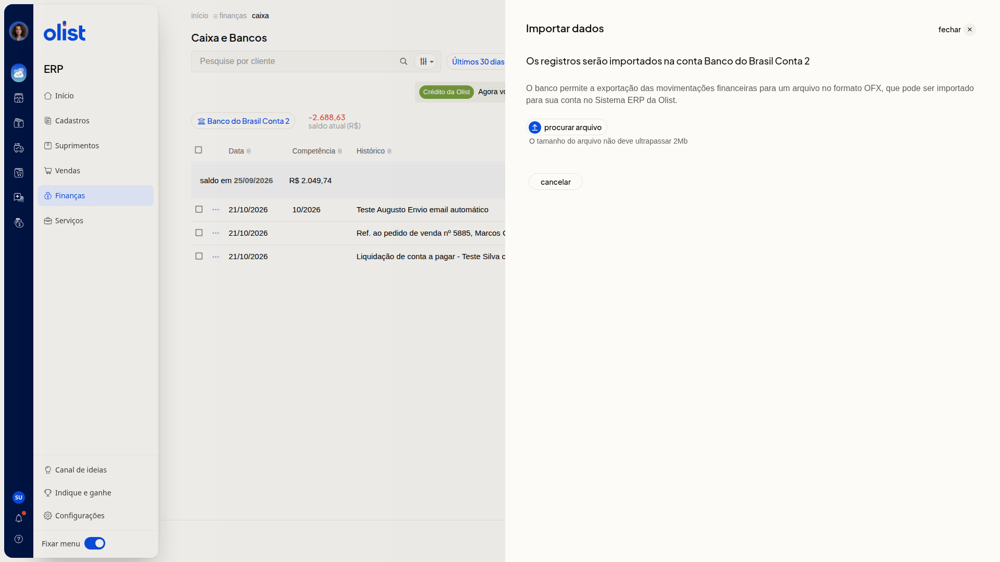

Como importar extrato OFX no Caixa e Bancos
Descrição
A importação de extrato OFX leva para o ERP da Olist as movimentações que o banco exporta nesse formato. Os registros entram na conta de caixa ou banco que está selecionada em Caixa e Bancos.
Para abrir a tela, acesse Finanças > Caixa. A importação fica em Mais ações > Importar extrato OFX.
Pré-requisitos
- Você precisa da permissão de Caixa para acessar Finanças > Caixa
- Você precisa da permissão de inclusão no Caixa para importar o extrato OFX
- Uma conta de caixa ou banco já selecionada na lista
- Um arquivo exportado pelo banco no formato OFX, de até 2Mb, referente à conta selecionada
Importante
- Os registros entram na conta selecionada no topo da lista. Confira a conta antes de importar.
- Não é possível incluir lançamento em data de período financeiro fechado.
Instruções
-
Acesse Finanças > Caixa.
-
Confira a conta selecionada no topo de Caixa e Bancos.
-
Clique em Mais ações.
-
Clique em Importar extrato OFX.
-
Confira em Importar dados que os registros serão importados na conta selecionada.

-
Clique em Procurar arquivo e escolha o arquivo OFX de até 2Mb. Para fechar o painel, clique em Cancelar.
Links relacionados
Se precisar de ajuda para importar o extrato, fale com o suporte.